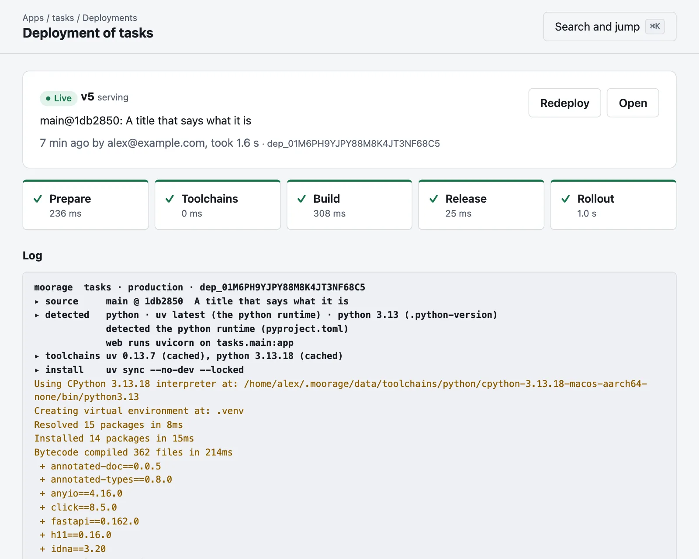
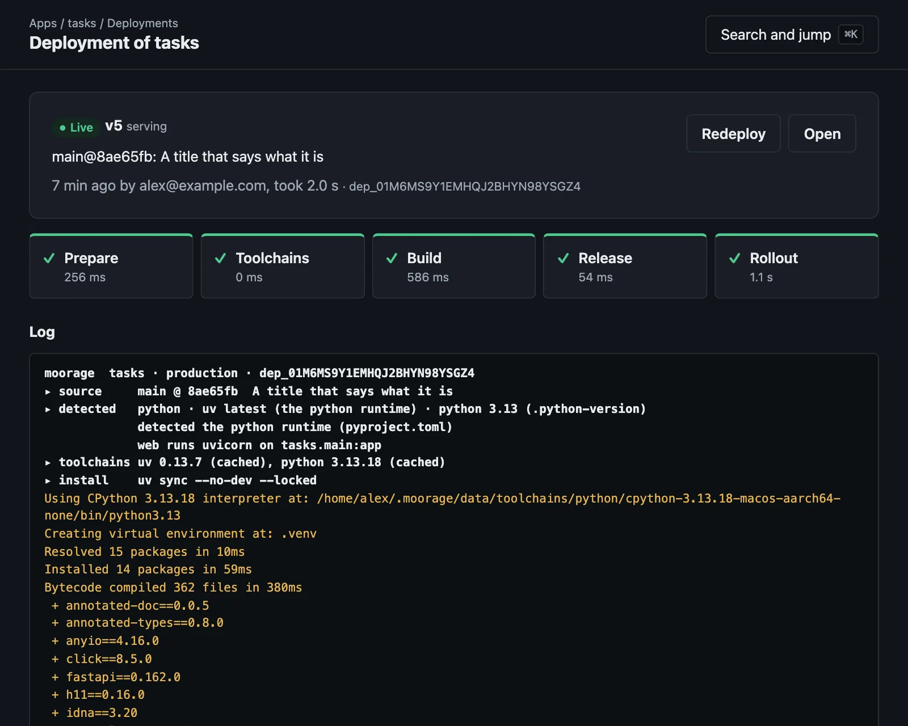

Deployments
See it build, as it builds
Moorage works out how to build your app, and fetches the toolchains it needs: the version it asks for, checked against its published checksums. A push shows the build as it runs, and fails if the deploy fails.
- Go, Python with uv, Node.js with npm, and static sites, with no configuration
- Your own build command, or a
Containerfile - A release command for migrations, which stops a bad deploy
- From
git push,moor deploy, the console, or the API

